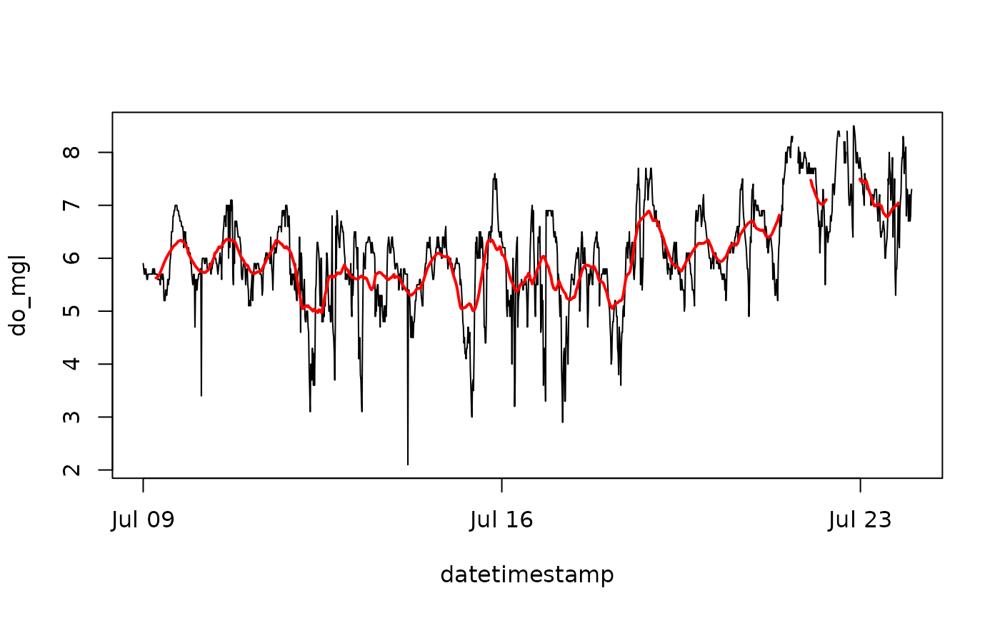

Smooth swmpr data with a moving window average
Usage
smoother(x, ...)
# S3 method for default
smoother(x, window = 5, sides = 2, ...)
# S3 method for swmpr
smoother(x, params = NULL, ...)Arguments
- x
input object
- ...
arguments passed to or from other methods
- window
numeric vector defining size of the smoothing window, passed to
filter- sides
numeric vector defining method of averaging, passed to
filter- params
is chr string of swmpr parameters to smooth, default all
Details
The smoother function can be used to smooth parameters in a swmpr object using a specified window size. This method is a simple wrapper to filter. The window argument specifies the number of observations included in the moving average. The sides argument specifies how the average is calculated for each observation (see the documentation for filter). A value of 1 will filter observations within the window that are previous to the current observation, whereas a value of 2 will filter all observations within the window centered at zero lag from the current observation. The params argument specifies which parameters to smooth.
Examples
## import data
data(apadbwq)
swmp1 <- apadbwq
## qaqc and subset imported data
dat <- qaqc(swmp1)
dat <- subset(dat, subset = c('2012-07-09 00:00', '2012-07-24 00:00'))
## filter
test <- smoother(dat, window = 50, params = 'do_mgl')
## plot to see the difference
plot(do_mgl ~ datetimestamp, data = dat, type = 'l')
lines(test, select = 'do_mgl', col = 'red', lwd = 2)
#> Warning: "select" is not a graphical parameter
